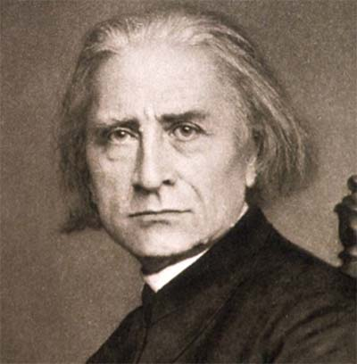

Period |
Description |
Most important musician |
| Baroque (1600-1750) |
During the period, composers and performers used more elaborate musical ornamentation, made changes in musical notation, and developed new instrumental playing techniques. |
Johan Sebastian Bach  |
| Classical (1750-1830) |
It was characterised by simple, clear structure and divisions. Whilst the word Baroque literally means “strange/weird”, classical very much conveys a sense of balance and “order”. |
Wolfang Amadeus Mozart  |
| Romantic (1830-1900) |
Some composers in the Romantic period used their music to try to describe a specific place, item, person or idea. |
Franz Liszt  |